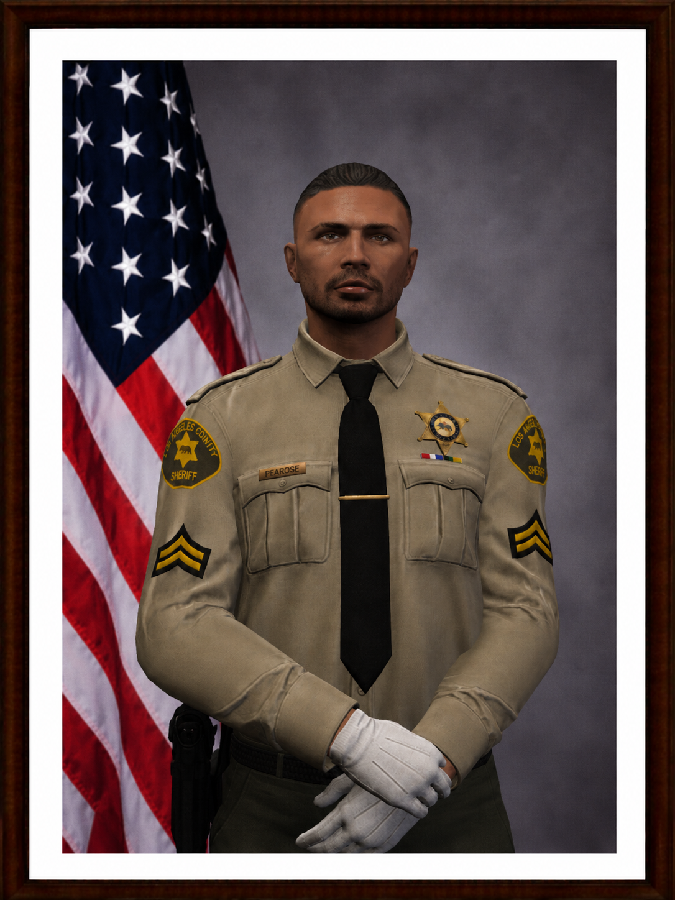
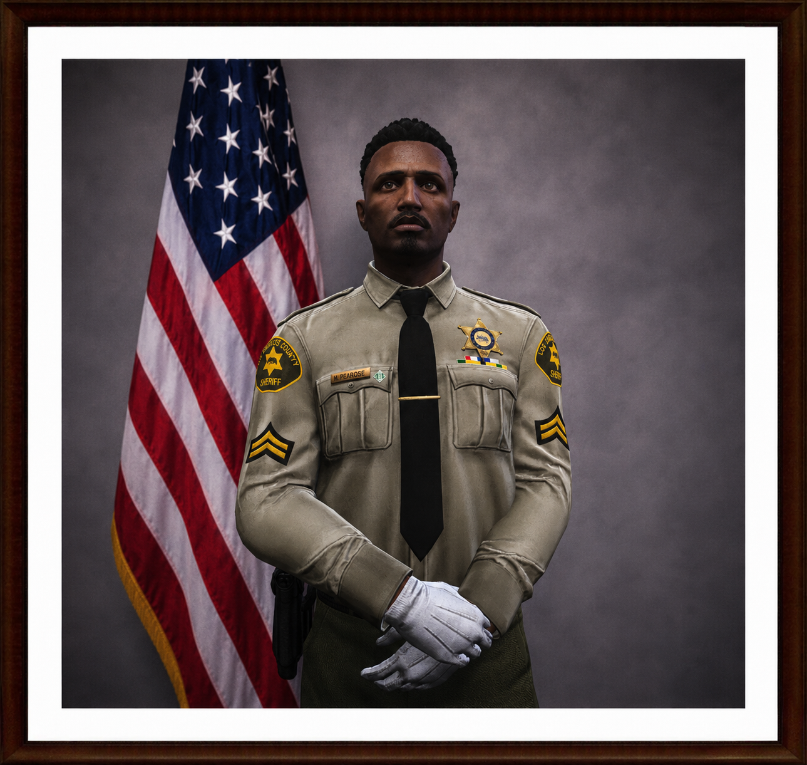

Los Angeles County Sheriff's Department
Ekip Kadrosu
İstasyonumuzun güncel personel, rütbe ve birim listesi.
Supervisorary Staff
Sergeant
3 Personel
Sergeant
Allan Houser
28154
Sergeant
Ryan Parker
28113
Sergeant
Axrel Gray
28175
Field Staff
Deputy Sheriff [Master FTO]
4 Personel
Deputy Sheriff [Master FTO]
Luther Black
28544

Deputy Sheriff [Master FTO]
Tweed Langers
28543
Deputy Sheriff [Master FTO]
Cey Wills
28560
Deputy Sheriff [Master FTO]
James Carter
28581
Bonus II
Deputy Sheriff [Bonus II]
0 PersonelBu rütbede aktif personel bulunmuyor.
Bonus I
Deputy Sheriff [Bonus I]
3 Personel
Deputy Sheriff [Bonus I]
Alaska Leo Martinez
28755
Deputy Sheriff [Bonus I]
Oliver Smith
28750
Deputy Sheriff [Bonus I]
John Bradford
28791
Deputy
Deputy Sheriff
12 PersonelDeputy Sheriff
Leak Poster
28878
Deputy Sheriff
Lucian Vale
28885
Deputy Sheriff
Bobline Dwayne
28846
Deputy Sheriff
Jalal Manning
28836
Deputy Sheriff
Isaac Paul
28818
Deputy Sheriff
Kaontee Liam Davis
28831
Deputy Sheriff
Xavier Brooks
28856
Deputy Sheriff
Ryder Brown
28865
Deputy Sheriff
Benja Carlem
28811
Deputy Sheriff
Arthur Walker
28833
Deputy Sheriff
Walter Carter
28869
Deputy Sheriff
David Brown
28886
Deputy
Deputy Sheriff [Trainee]
12 PersonelDeputy Sheriff [Trainee]
Jackson Reed
28967
Deputy Sheriff [Trainee]
David Brown
28886
Deputy Sheriff [Trainee]
Mason Galluci
28917
Deputy Sheriff [Trainee]
Oscar Town
28920
Deputy Sheriff [Trainee]
Logen Cooper
28963
Deputy Sheriff [Trainee]
George Adams
28987
Deputy Sheriff [Trainee]
Brian Mercer
28924
Deputy Sheriff [Trainee]
Simon Harding
28922
Deputy Sheriff [Trainee]
Joseph Rivera
28939
Deputy Sheriff [Trainee]
Andrei White
28915
Deputy Sheriff [Trainee]
Lewo los
28962
Deputy Sheriff [Trainee]
Lyrical Anthony
28961